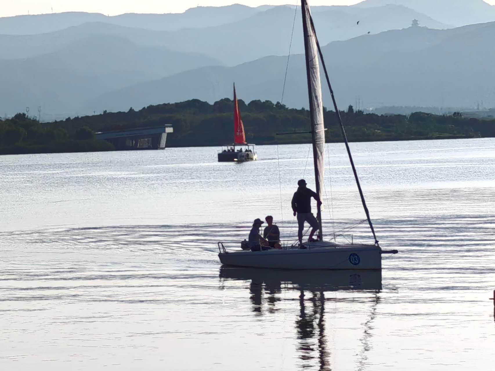

PNW AYSC
Pacific Northwest Asian Youth Sailing Club
Who we are and why we sail

PNW Youth Sailing Club is a youth-focused sailing program serving children ages 8–14 throughout the Pacific Northwest. Our goal is to introduce young people to sailing in a way that is safe, structured, and genuinely enjoyable, especially for those stepping onto a boat for the first time. Through hands-on instruction and guided practice, participants learn essential sailing techniques while gaining confidence in their abilities on and off the water.
Beyond technical skills, the program emphasizes personal development. Sailors learn how to communicate effectively, work as part of a team, and solve problems in real time—skills that carry far beyond sailing. Instructors foster a supportive environment where mistakes are treated as opportunities to learn, helping each participant grow at their own pace.
We are deeply committed to accessibility and inclusion. No prior experience is required, and we strive to remove barriers so that all children can participate and feel they belong. By building a positive and encouraging community, PNW Youth Sailing Club not only teaches sailing, but also nurtures a lifelong connection to the outdoors, the water, and a spirit of adventure.